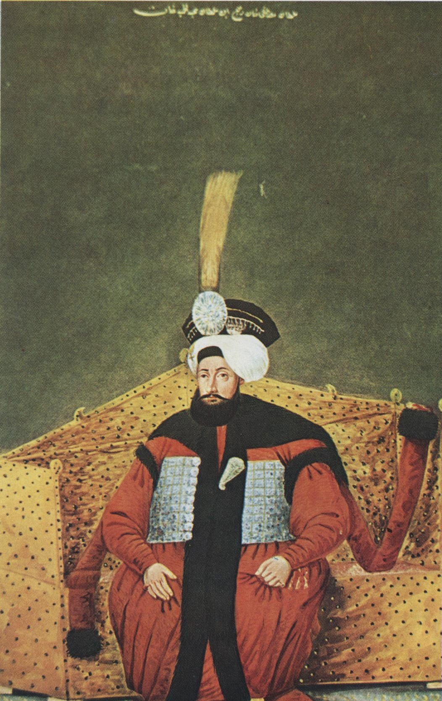

| önceki |  |
sonraki |
IV. Mustafa (Osmanlı Türkçesi: مصطفى رابع; d. 8 Eylül 1779, İstanbul – ö. 16 Kasım 1808, İstanbul), 29. Osmanlı padişahı ve 94. İslam halifesidir. Babası I. Abdülhamid, annesi Âyişe Sineperver Valide Sultan'dır. Nizâm-ı Cedîd hareketini boğan kanlı Kabakçı Mustafa İsyanı neticesinde tahta çıkarılmış; 14 aylık fırtınalı saltanatı boyunca yeniçeri zorbalarının ve saray entrikalarının gölgesinde kalmıştır. Tahttan indirilme anında verdirdiği kanlı idam emirleri, amcası III. Selim'in şehadeti ve ardından patlak veren Alemdar Vakası sırasında kendi hayatının da hazin bir şekilde son bulmasıyla Osmanlı tarihinin en trajik hükümdarlıklarından birine sahne olmuştur.
Şehzadelik Yılları ve Muhafazakâr Çevrelerin Etkisi
IV. Mustafa, 8 Eylül 1779 tarihinde Topkapı Sarayı'nda dünyaya geldi. Babası I. Abdülhamid 1789'da vefat ettiğinde henüz on yaşındaydı. Tahta geçen amcasının oğlu III. Selim, şehzadeye bir evlat şefkatiyle yaklaşmış, sarayda serbest ve konforlu bir şehzadelik hayatı sürmesini temin etmişti.
Buna rağmen veliaht şehzade, annesi Sineperver Sultan ve Nizâm-ı Cedîd karşıtı tutucu devlet ricalinin (Şeyhülislam Ataullah Efendi, Köse Musa Paşa) tesiri altında yetişti. Modernleşme hareketlerinin din ve devlet esaslarını zedelediği yönündeki telkinlere inandı; yeniçeri ağalarıyla gizli temaslar kurarak amcasının reform programına karşı muhalefetin odağı haline geldi.
Kabakçı İsyanı ve İktidara Gelişi (Mayıs 1807)
25 Mayıs 1807 günü Karadeniz Boğaz yamaklarının Kabakçı Mustafa liderliğinde başlattığı isyan, payitahtı bir anda ateşe verdi. III. Selim, kan dökülmesini önlemek amacıyla tahttan feragat edince, 29 Mayıs 1807'de 28 yaşındaki Şehzade Mustafa tahta davet edildi.
Genç padişah tahta geçer geçmez asilere boyun eğen idari tasarruflarda bulundu:
- Nizâm-ı Cedîd'in Feshi: Modern ordu tamamen dağıtıldı, Levent ve Üsküdar kışlaları kapatıldı, İrâd-ı Cedîd hazinesi feshedilerek malları yağmalandı.
- Hüccet-i Şer'iyye: İsyancı yeniçerilerin ve elebaşılarının hiçbir surette sorumlu tutulmayacağına, işledikleri cinayetlerden ötürü hesaba çekilmeyeceklerine dair utanç verici bir hukuki taahhütname imzalandı.
- Reformcuların Tasfiyesi: Nizâm-ı Cedîd taraftarı olan dirayetli devlet adamları (İngiliz Mahmud Raif Efendi, Hacı İbrahim Efendi gibi mühim rical) asiler tarafından sokak ortasında vahşice linç edildi.
İstanbul sokaklarında asayiş tamamen çöktü; kabadayılar, yeniçeriler ve tulumbacılar halkı haraca bağladı; devlet mekanizması iflas eşiğine geldi.
Dış Politika ve Tilsit Antlaşması Şoku
IV. Mustafa devrinde devam eden Rus harbi sırasında, müttefik sayılan Fransa İmparatoru Napolyon Bonapart, 1807 yılında Rus Çarı I. Aleksandr ile Tilsit Antlaşması'nı imzalayarak Osmanlı Devleti'ni gafil avladı. İki büyük imparator Osmanlı topraklarını aralarında paylaşma planları yaptı. Bu diplomatik şok üzerine Osmanlı Devleti çaresiz kalarak Rusya ile 1807 Slobodzia Mütarekesi'ni imzalamak zorunda kaldı.
Alemdar Baskını ve Kanlı Saray İhtilali (28 Temmuz 1808)
Devletin içine düştüğü bu felaketi kabullenemeyen Tuna boylarının güçlü serhad kumandanı Rusçuk Âyânı Alemdar Mustafa Paşa, 15 bin kişilik talimli Rumeli ordusuyla payitahta yürüdü. Amacı Kabakçı zorbalarını bertaraf etmek ve çok sevdiği III. Selim'i yeniden tahta çıkarmaktı.
Temmuz 1808'de İstanbul'a giren Alemdar, Kabakçı Mustafa'yı öldürttü ve Bâb-ı Âlî'ye el koydu. 28 Temmuz günü ordusuyla Topkapı Sarayı'nın Bâb-ı Hümâyun kapısına dayanarak kapıların açılmasını ve III. Selim'in tahta çıkarılmasını talep etti.
Tahtını kaybetme dehşetine kapılan IV. Mustafa, korkunç bir hesap yaptı: Eğer hanedanda kendisinden başka hayatta erkek üye kalmazsa, ne olursa olsun kendisinin tahttan indirilemeyeceğini düşündü. Derhal saray cellatlarını ve sadık bostancılarını vazifelendirerek hem amcası III. Selim'in hem de öz kardeşi Şehzade Mahmud'un (geleceğin II. Mahmud'u) derhal boğulmasını emretti:
- III. Selim'in Şehadeti: Cellatlar odaya girdiğinde ney ve kılıcıyla kahramanca direnen sabık hükümdar, çok sayıda celladın hücumuyla hançerlenerek kanlar içinde katledildi.
- Şehzade Mahmud'un Mucizevi Kurtuluşu ve Cevrî Kalfa: Cellatlar Şehzade Mahmud'un dairesini bastığında, saray cariyelerinden Cevrî Kalfa eline geçirdiği mangaldaki kızgın kül ve közleri katillerin gözlerine savurarak onlara kahramanca direndi. Bu sırada sadık bendegân şehzadeyi sarayın çatısına kaçırdı; kiremitlerin üzerinden atlatılarak saray kapısını balyozlarla kıran Alemdar Mustafa Paşa'nın kollarına ulaştırıldı.
Tahttan İndirilişi ve Şimşirlik Hapsi
Bâbüssaâde kapısını kırıp içeri giren Alemdar Paşa, avluda III. Selim'in kanlı naaşıyla karşılaşınca gözyaşlarına boğuldu. Ardından sağ salim kurtarılan 23 yaşındaki Şehzade Mahmud'un önünde diz çökerek biat etti ve onu II. Mahmud adıyla tahta çıkardı.
IV. Mustafa ise tahttan indirilerek Topkapı Sarayı Şimşirlik dairesine hapsedildi. Saltanatı yalnızca 1 yıl 2 ay sürmüştü.
Alemdar Vakası ve IV. Mustafa'nın Sonu (16 Kasım 1808)
Sadrazamlığa getirilen Alemdar Mustafa Paşa'nın Sekbân-ı Cedîd adıyla yeni bir ordu kurması üzerine, Kasım 1808'de yeniçeriler tarihin en kanlı isyanlarından birini (Alemdar Vakası) başlattılar. Bâb-ı Âlî'yi kuşatan asilere karşı direnen Alemdar Paşa, cephaneliği ateşe vererek yüzlerce asiyle birlikte kendini havaya uçurdu.
Çılgına dönen yeniçeriler, IV. Mustafa'yı tekrar tahta çıkarmak gayesiyle Topkapı Sarayı'na saldırdılar. Saray surları kuşatma altındayken, tahtını ve hayatını kurtarmak zorunda olan II. Mahmud, ulemanın ve devlet ricalinin fetvasıyla Şimşirlik'te mahpus bulunan ağabeyi IV. Mustafa'nın idam emrini verdi. 16 Kasım 1808 gecesi 29 yaşında kementle boğularak hayatına son verildi.
Cenazesi ertesi gün sessizce kaldırılarak Bahçekapı'da babası I. Abdülhamid'in türbesine defnedildi.
Ailesi
- Eşleri:
- Şevkinûr Başkadın (? - 1812)
- Seyyâre Kadın (? - 1817)
- Dilpezîr Kadın (? - 1809)
- Peyvendimelek Kadın
- Çocukları:
Oğlu Şehzade Ahmed bebekken vefat etmiştir. Kızı Emine Sultan (1809 - 1810) da babasının vefatından sonra dünyaya gelmiş ve bebek yaşta vefat etmiştir.
IV. Mustafa hakkında daha fazla bilgi için buraya tıklayın.